🎮 Mission TEC — Exploration de la chambre · V1.6
Avance, regarde autour de toi et corrige les anomalies dans l'ordre que tu souhaites.

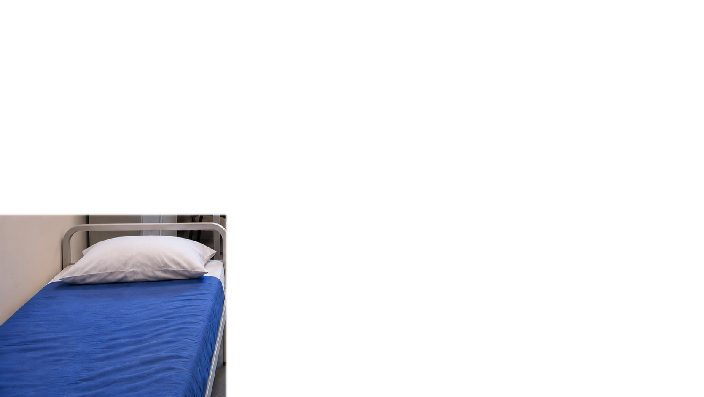
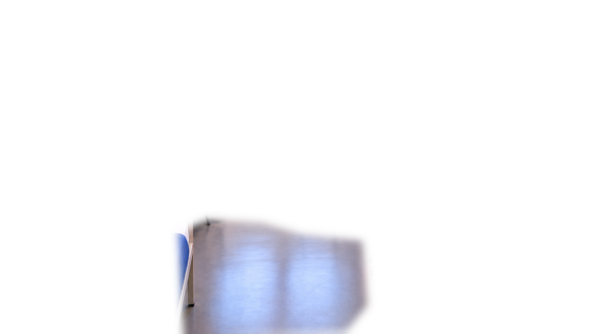
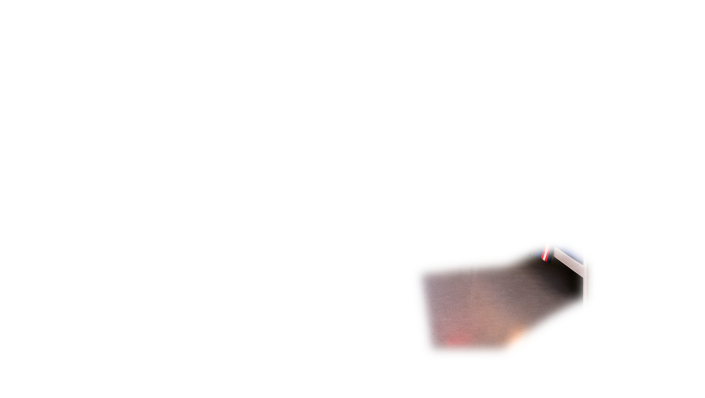
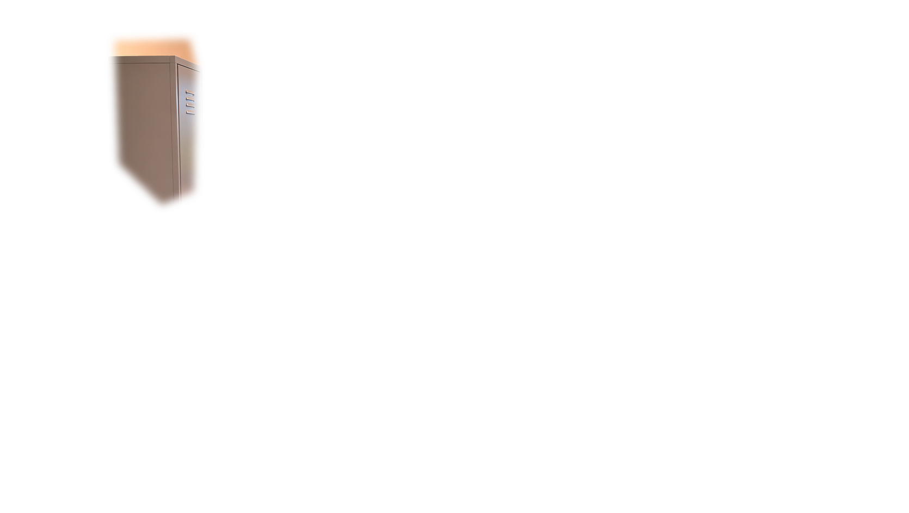
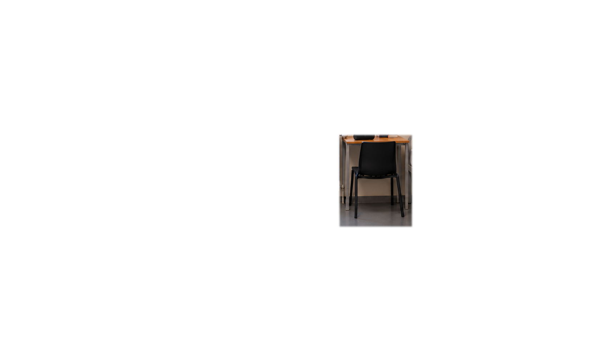
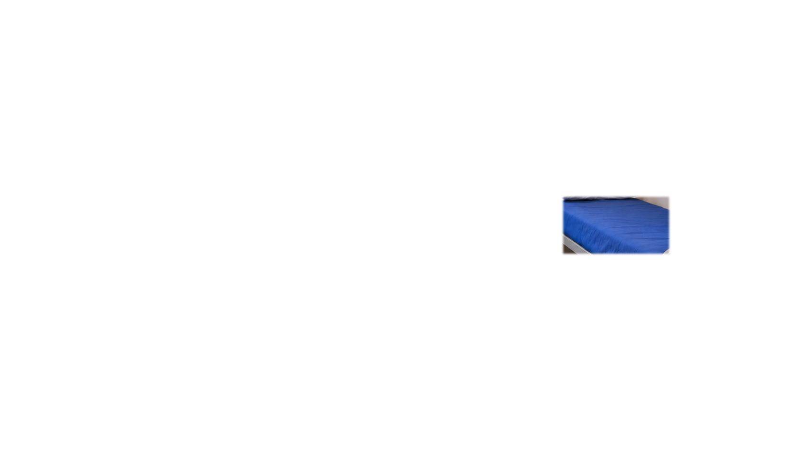
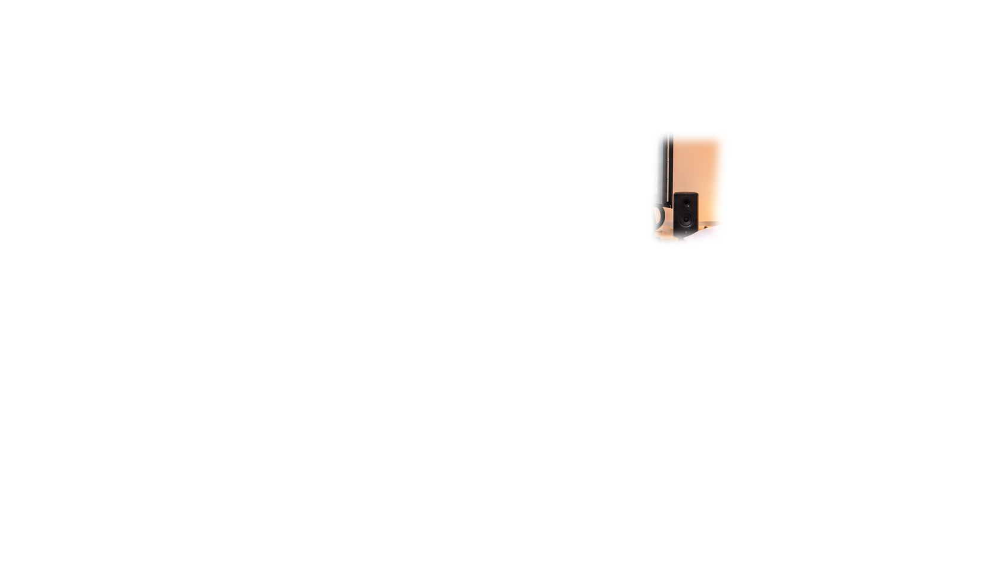
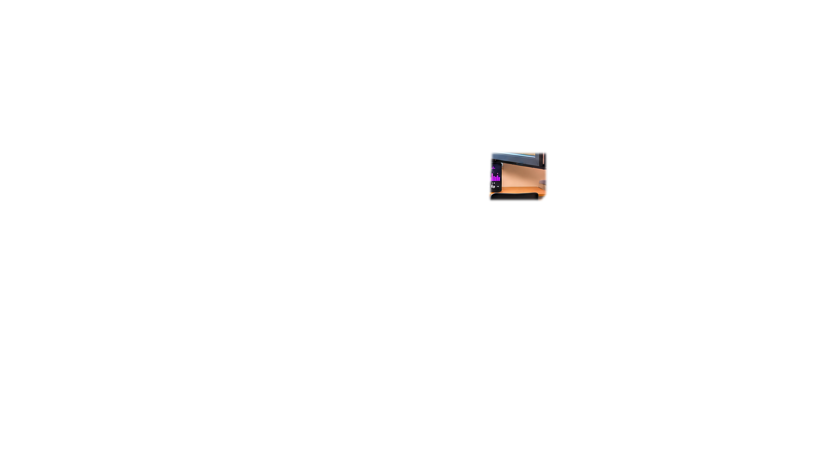
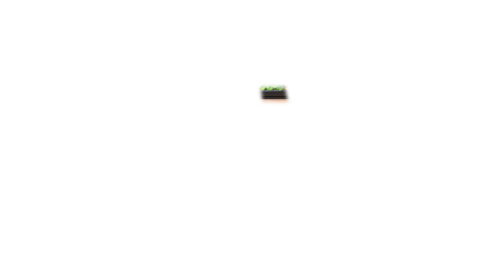
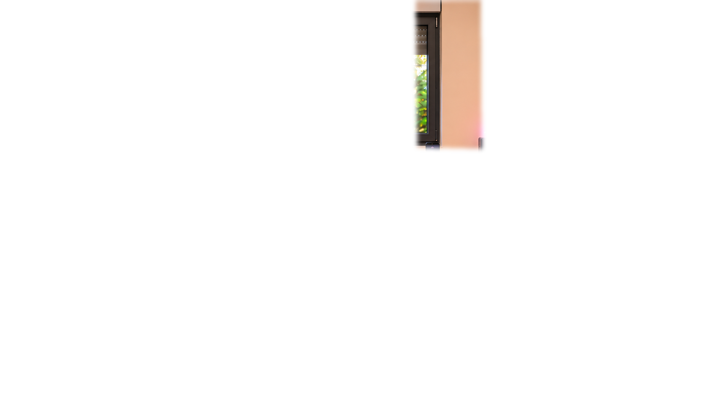
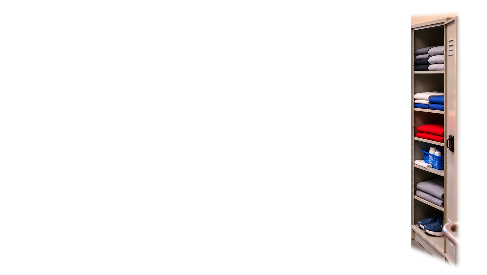

Glisser pour regarder · molette/pincement pour zoomer · flèches disponibles
Corrections réalisées : 0 / 12
Observe la chambre et clique sur une anomalie.
Vue : centre · Zoom : 100 %